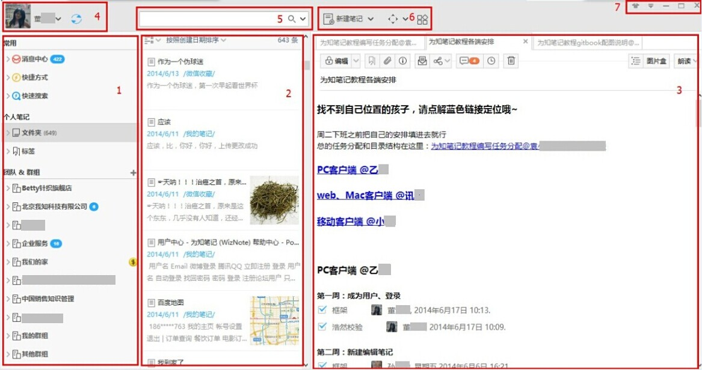

主界面介绍
为知笔记Windows客户端提供了强大功能。布局却很简单，下面就做一个简单的布局介绍：

- 侧边栏区域
- 常用工具栏
- 消息中心：接收群组成员通过@、评论、编辑笔记时来的消息提醒
- 快捷方式：可以通过拖拽标题把常用的笔记的快捷方式拖拽到这个区域，可以快速定位
- 快速搜索：可以通过创建日期、修改日期、访问日期等快速搜索笔记
- 个人笔记区域
- 文件夹：存放个人笔记的文件夹目录
- 标签：目前支持个人笔记，存放个人笔记的标签目录树
- 群组&团队区域
- 企业群组：存放自己创建的企业群组和被别人加入的企业群组目录树结构
- 个人群组
- 我的群组：存放的是自己创建的个人群组
- 其他群组：存放的是被别人添加的个人群组
- 笔记列表区域
- 笔记列表排序：可以通过创建日期、修改日期、访问日期、评价等排序笔记列表
- 个人笔记列表：制定目录下的笔记列表
- 群组笔记列表：制定目录下的群组笔记列表
- 笔记编辑区域
- 笔记标题：新建状态下显示未命名，可在此次添加笔记标题
- 笔记正文：笔记正文编辑区可以编辑笔记内容
- 笔记操作
- 保存并阅读：保存笔记，保存后笔记为阅读状态
- 添加标签：可以为笔记添加标签
- 添加附件：点击添加多种格式附件
- 笔记属性：显示笔记创建时间和修改时间，并可快速定位到相应文件夹
- 发邮件：可把笔记当做邮件发送出去
- 分享笔记：可以通过微博、博客等分享也可以另存为自定义笔记模板
- 评论笔记：可以添加笔记的评论
- 笔记历史版本恢复：VIP用户可以查看和恢复20个笔记的历史版本
- 删除笔记：可直接把笔记删除
- 大纲等
- 账户设置区：点击可以切换帐户、退出、升级到VIP以及查看并设置帐户的有关信息，包括本月上传流量使用量、更换用户登录ID、邀请好友、更换头像、修改昵称等
- 搜索区域：根据关键词来搜索笔记。为知笔记不仅可搜到标题内容，若果附件是导入并在正文显示还可以搜索到附件内容。
- 工具栏区域
- 新建笔记：建立新的空白笔记，点击下拉框可创建模板笔记
- 全屏切换：切换笔记视图
- 为知笔记应用中心：链接到为知笔记插件中心，下载为知笔记插件
- 自定义工具栏：右键点击顶部菜单栏空白区域可调出自定义工具栏，添加便签、任务列表等快捷方式
- 菜单栏区域
- 更换皮肤：更换为知笔记皮肤
- 文件：导入导出文件内容等
- 查看：笔记视图的切换等
- 工具：可调用浮动工具栏等
- 帮助：查看帮助手册、在线反馈问题等
- 选项：可设置笔记的默认设置等